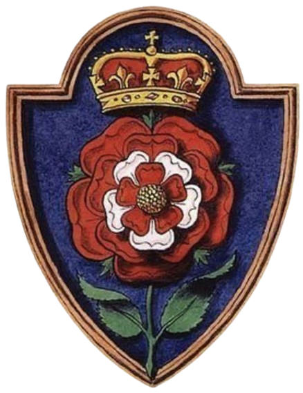
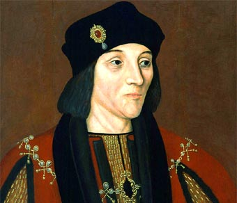
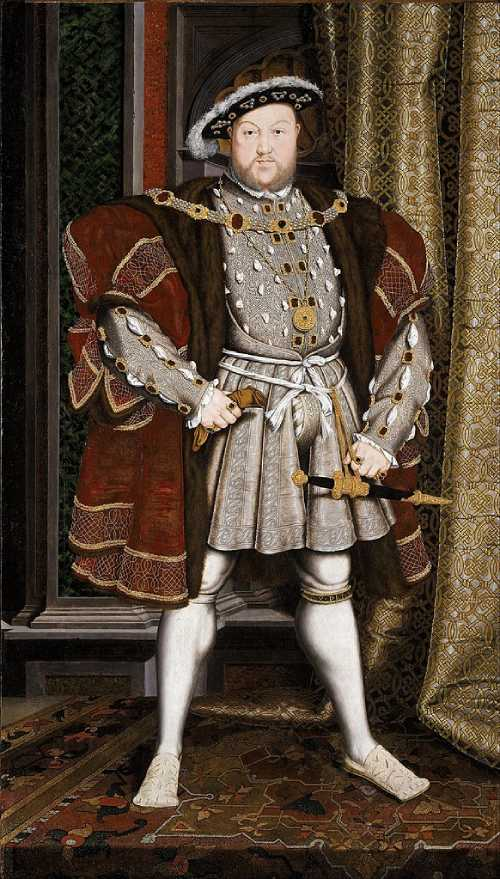
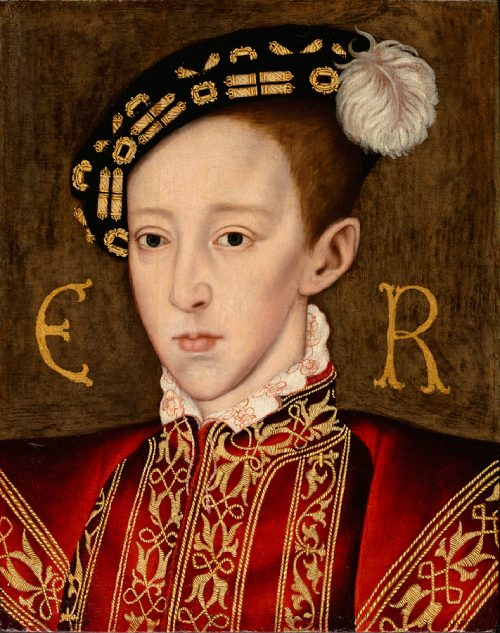
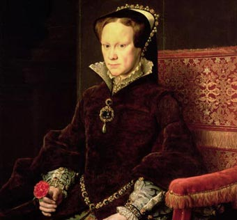
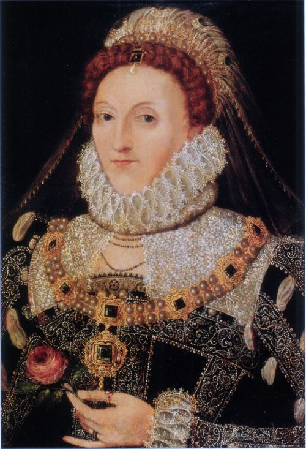

| Enrique Septimo | Enrique Octavo | Eduardo Sexto |
|---|---|---|
|  Nacido en Gales en 1457 como único hijo de la comentada relación entre Edmundo Tudor y Margarita Beaufort, siendo nieto por vía paterna de Owen Tudor y de Catalina de Valois (matrimonio considerado inválido por un decreto real) y, por el lado materno, descendiente de Juan Beaufort (hijo natural de Juan de Gante, duque de Lancaster y Catalina de Roet-Swynford), medio hermano del monarca Enrique IV. |
 Fue el segundo hijo varón de Enrique VII e Isabel de York, y se convirtió inesperadamente en heredero al trono ante el fallecimiento de su hermano mayor, Arturo. De hecho, contrajo matrimonio en 1509 con la viuda de éste, Catalina de Aragón, hija de los Reyes Católicos, Isabel de Castilla y Fernando de Aragón, en un intento por tener buenos vínculos con estas coronas. De frágil salud desde su infancia, falleció a sus 15 años, siendo reemplazado brevemente por su prima Juana Grey, quien ocupó el trono sólo por nueve días. |
 Enrique VIII nació en 1537, ascendiendo al trono a la muerte de su padre con solo diez años de edad, acompañado por un consejo de regencia. Aunque fue protestante, su reinado se caracterizó por ser el periodo de evolución de la Iglesia Anglicana, anteriormente creada por su progenitor. Algunos de sus colaboradores propiciaron una intensa persecución contra el catolicismo. |
| Maria Primera | Isabela Primera |
|---|---|
| 
Fue la hija mayor de Enrique VIII, fruto de su primer matrimonio con Catalina de Aragón. En medio del litigio de la separación de sus padres,
fue declarada ilegítima y excluida de la línea de sucesión al trono,
derecho que retomó a partir de 1544 con la Ley aprobada por su padre después de su reconciliación. Al no dejar descendencia, declaró a su media hermana como su sucesora, haciéndose efectivo este decreto a su muerte, nombrando el Parlamento a Elizabeth, reina de Inglaterra. |
 La reina Isabel primera de Inglaterra e Irlanda fue hija del segundo matrimonio de Enrique VIII con Ana Bolena. Las dificultades de Isabel primera de Inglaterra comenzaron desde muy pequeña, al ser declarada ilegítima después de la ejecución de su madre en 1536, quien había sido acusada por adulterio, incesto, brujería y traición. De igual forma, el nacimiento de su hermano Eduardo y las constantes confrontaciones con su media hermana María, marcaron a la reina Isabel I de joven, ya que veía difícil su ascenso al trono por los motivos anteriormente expuestos. fue declarada sucesora al trono de su hermana mayor María ya que ésta no tuvo descendencia durante su reinado |